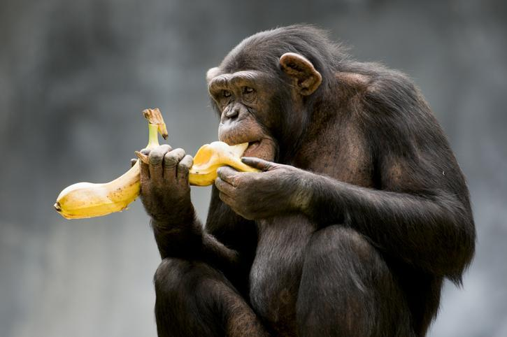
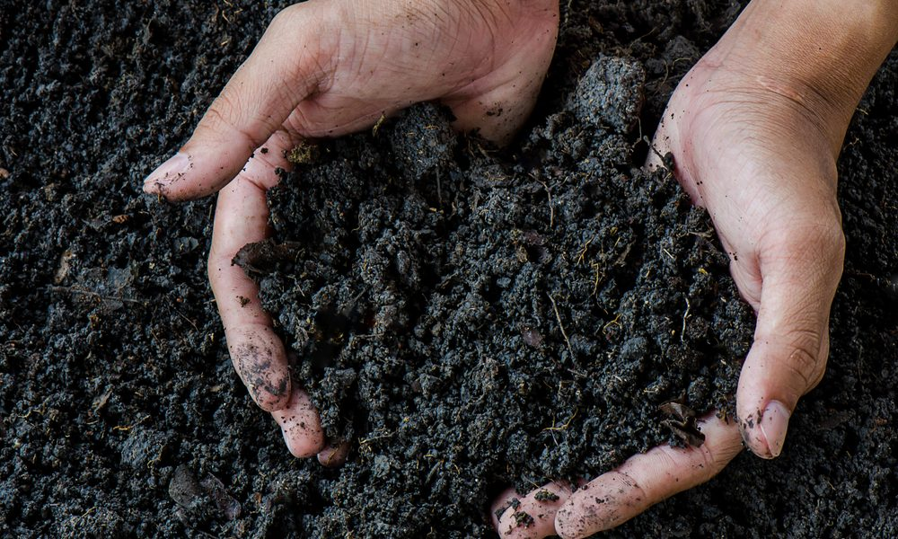
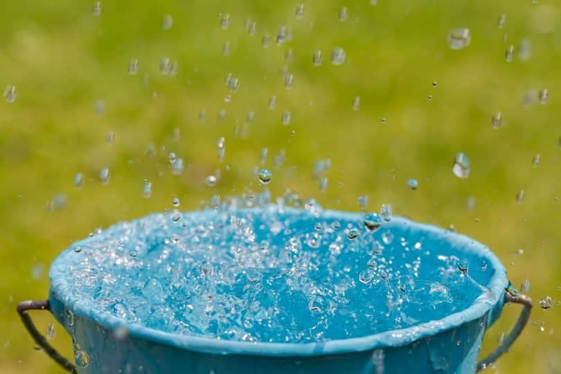
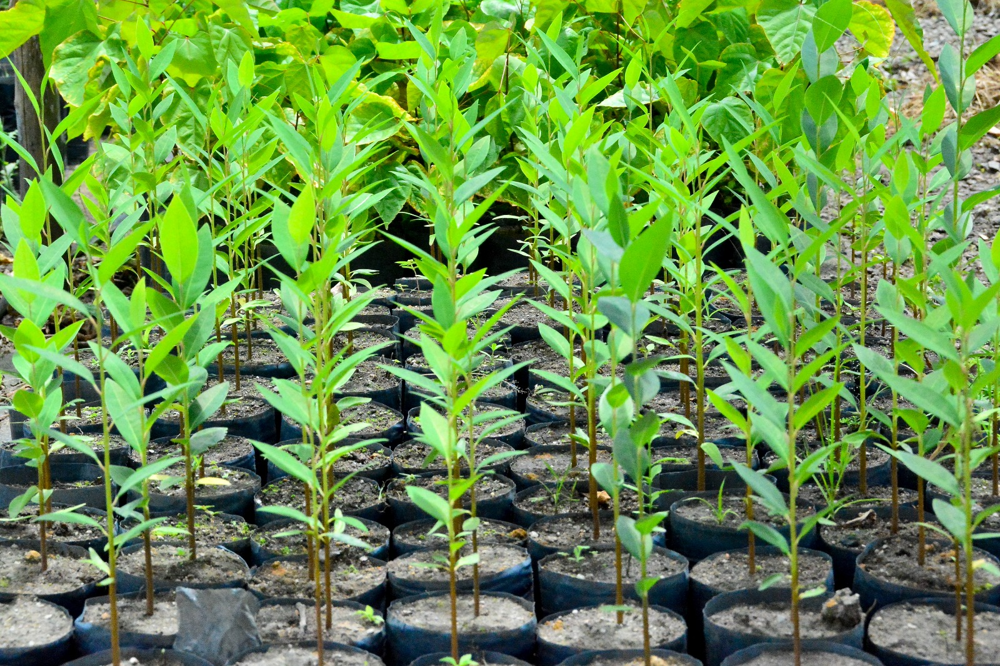
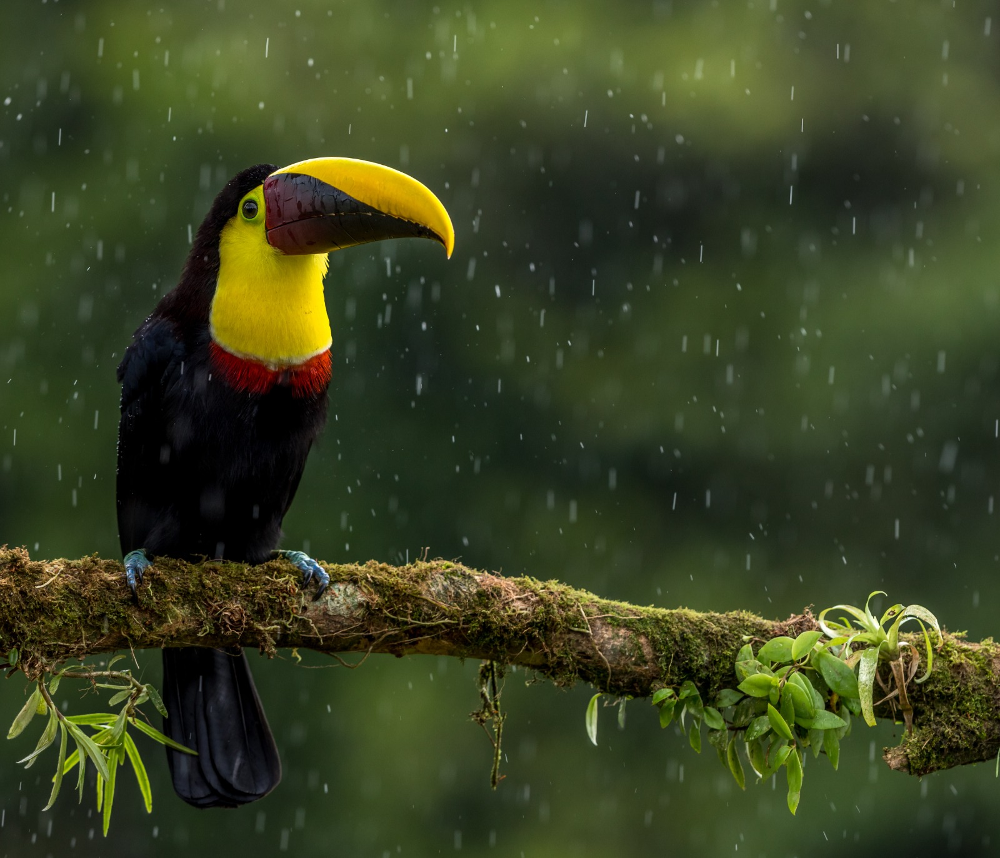

Conheça um pouco dos nossos projetos!
A maneira mais simples de definir o que significa ser ecológico é o ato de viver com intenção. A intenção
é focar em não criar danos ao meio ambiente por meio de suas interações com ele.
A ecologia tem a função de abordar o impacto da ação do homem sobre o planeta e como o clima age sobre
os seres do meio ambiente, como fauna e flora, por exemplo.
A ecologia é dividida entre ecologia vegetal e animal. A ecologia animal analisa a relação entre o
animal e o ambiente que vive. A ecologia vegetal considera a vegetação e a interação com o meio
ambiente.
Nós da EcoZoo temos por principal objetivo, priorizar o bem-estar dos nossos animais, sem causar
qualquer dano ao meio ambiente, para isso, temos algumas ações que priorizam a preservação ambiental
como:

FRUTAS DA ÉPOCA PARA OS ANIMAIS

COMPOSTAGEM

TELHADO VERDE

CAPTAÇÃO DA ÁGUA DA CHUVA

AUTOSSUFICIENTE EM PRODUÇÃO ELÉTRICA

ARBORIZAÇÃO COM MUDAS NATIVAS

SISTEMA DE TRATAMENTO DE ESGOTO POR ZONA DE RAÍZES

RETORNO DA FAUNA À mata